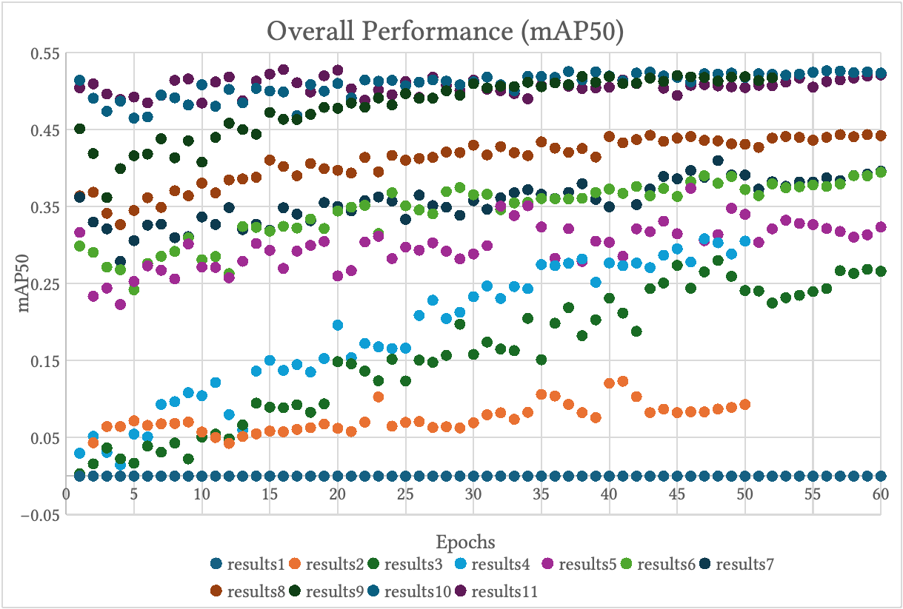
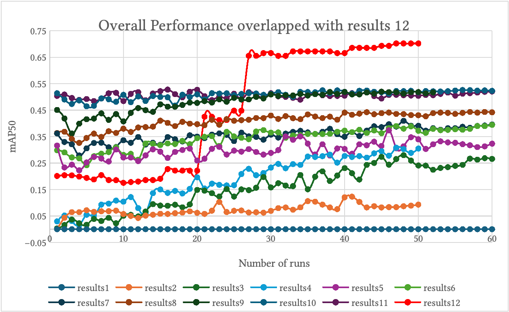
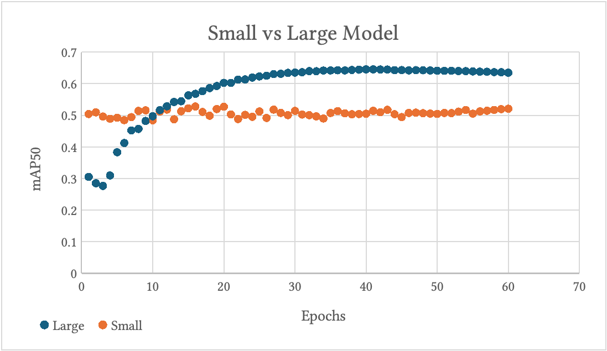
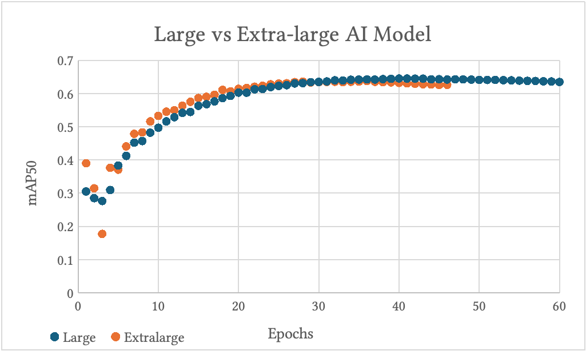
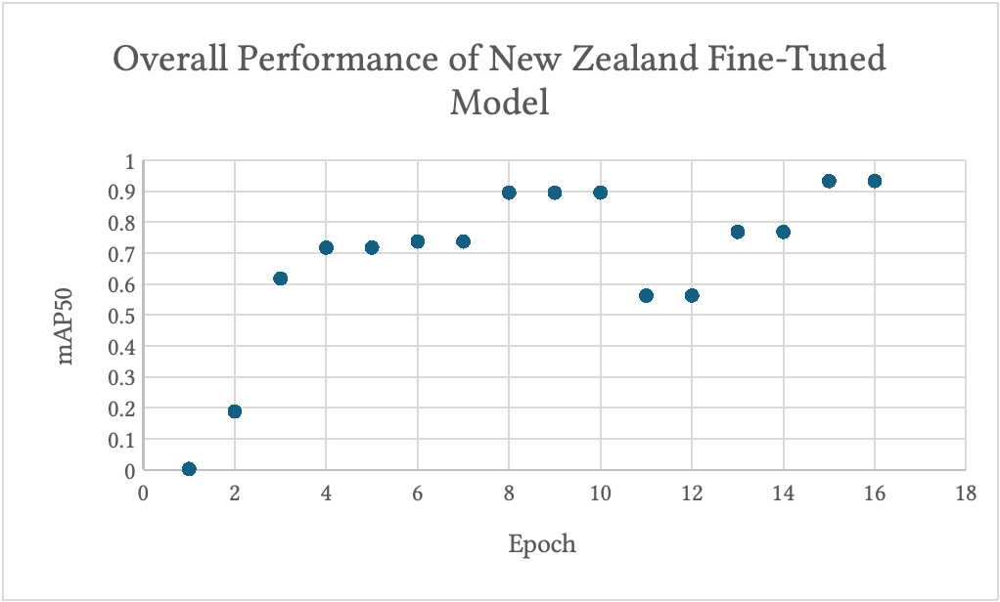
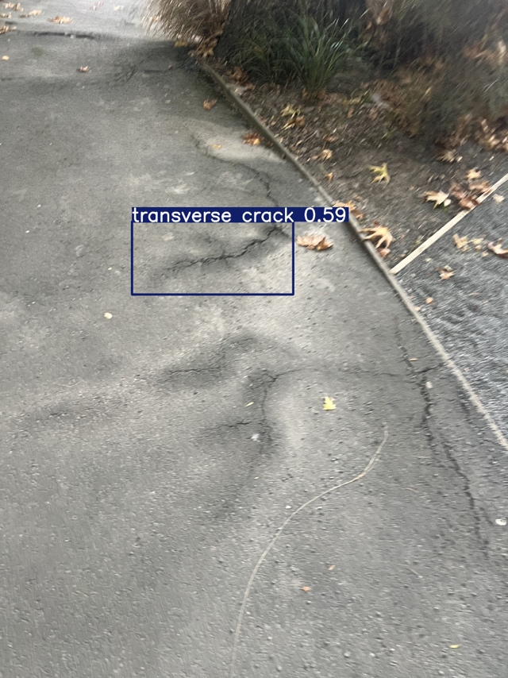
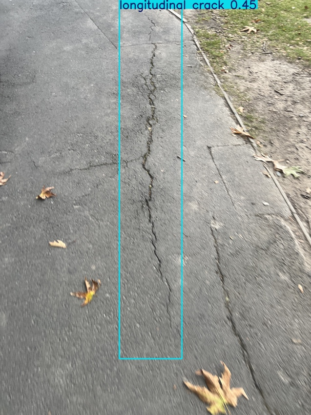

4.0 Preliminary results
4.1 Baseline performance on small model
This section presents the performance of the model with training the small YOLO model with the RDD2022 dataset. The results were evaluated using mAP50 across multiple training runs. This was to assess the model performance across batches and dataset sizes. The dataset size was not equal as some batches contained more images than another batch. Figure 10 shows the overall performance (mAP50) for each training run. Each series represents a different batch allowing performance trends to be observed as more data in introduced and as the AI improves. The graph illustrates mAP50 plotted over training Epochs

The results show that the AI generally improves throughout each run. However, the first 4 batches showed the most improvements, as the model was initially learning key features required to detect pavement defects. In addition, the first 5 batches had a low number of training images (<500) which resulted in a lower and unstable performance during the early stage of training
As the number of training images increased the model performance became more consistent and gradually trended upward which means that the AI-model is learning. However, in later runs and batch size increasing, particularly in results 10 and 11 which had 5002 and 2198 train images. The performance started to plateau around 0.5-0.52 despite of the large dataset.
This suggests that increasing the dataset size, while maintain similar data quality, does not continue to improve model performance. The model has effectively learnt everything that the model can from the RDD2022 dataset. Which means that training images will need to be sourced locally and higher quality images will need to be gathered.
Overall, these results show that initial model training on the dataset was strong and improved performance initially, further improvements will need to be found from higher quality and diverse images on New Zealand pavements rather than increases the number of training images.
4.1.1 New Zealand data vs small model
An initial New Zealand-specific training run was carried out using a small dataset which consisted of 10 training images and 4 validation images. This run was represented by results 12 in figure 11 (red line). Even though the dataset was small, the training run showed a noticeably different performance trend compared to the earlier dataset runs
Results 12 started with a relatively low mAP50 (overall performance) of around 0.2 and remained flat for first 20 epochs (training runs). However, after the 20th epoch, the mAP50 showed a sharp increase in performance, which raised to approximately 0.68 before flattening out again. This is interesting because it was the first time the model was trained on New Zealand data and the model required time to adapt to the new local patterns before performance improved. In addition, the photos that were taken were of high quality which may explain why the mAP50 jumped above the dataset runs. This provided some useful insight into how the model learns and suggests that the model may respond to data quality and quantity alone.

However, these results should be interpreted with a grain of salt because the dataset was very small. The high performance may be because of overfitting rather than true generalisation. So, results 12 should be handled as preliminary indication that high quality New Zealand-specific data is valuable. Further training with a larger and more diverse local dataset are required to determine whether this performance trend can be repeated under real-world conditions.
Some photos of results 12 is location in appendix D.
4.2 Development of a stronger baseline model
The small model provided a strong starting point for the project and was useful for establishing an initial training workflow, understanding how hardware affected training speeds and quality, and provided an early-stage baseline model. However, the overall aim is to develop an artificial intelligence and computer vision-based system able to assist in the detection of visible pavement surface defects in flexible pavements. To support this aim, the model needed to reach a level of performance where the model could accurately and consistently find defects under varying road and environmental conditions. This means the model was upgraded from the small YOLO model to the large model to create a stronger baseline model for the project.
The larger model was chosen as an upgrade because it has a greater model capacity, a higher potential for a stronger detection in road pavements and a stronger baseline model for New Zealand road data. The image size was also increased from 640 pixels to 704 pixels which provided the model with more image detail. This was an important upgrade because defects in pavements often look like a small texture change so increasing the image size will help the model detect defects more accuracy and consistency. The larger model and higher image quality has a significantly higher computational demand. The MacBook air M2 was tested as a local training platform, however its limited computational performance and thermal considerations resulted in significantly slower training times. Similarly, the T4 GPU used on the small model at 640p would take too long to train the larger YOLO model. Therefore, an Nvidia A100 GPU was utilised to make the training process more efficient and while remaining affordable. The Nvidia H100 GPU was considered however access to runtime is difficult and compute cost is significantly higher.
Hardware platform | Type | Compute Specification | Memory | Memory bandwidth |
|---|---|---|---|---|
MacBook Air m2 | Integrated CPU/GPU | 8-core CPU, 8-core GPU | 8GB of unified memory | 100GB/s |
NVIDIA Tesla T4 | Data-centre GPU | 8.1 TFLOPS | 16GB of VRAM | 320GB/s |
NVIDIA A100 | Data-centre GPU | 19.5 TFLOPS | 40GB of VRAM | 1.56TB/s |
NVIDIA H100 | Data-centre GPU | 67 TFLOPS | 80GB of VRAM | 3.35TB/s |
Figure 12 shows a significant increase in computational capability and memory bandwidth from the MacBook Air M2 to the data-centre GPUs. The increase in performance in hardware enables significantly faster training times and can support larger models and higher image size.
4.2.1 Comparison of small and large baseline model
To decide whether a stronger baseline model had been achieved. The best performing small model was compared to the upgraded large model. This comparison between the two models is important to determine whether the larger model and larger image size resulted to a stronger baseline model. Figure 13 shows the overall performance (mAP50) between the strongest small model and the large model
Figure 13 shows that the upgraded large model provided a substantially stronger baseline than the best-performing small model. The large model reached a peak mAP50 of 0.645 on epoch 40. Compared to the best-performing small model which reached a peak mAP50 of 0.528 at epoch 16. The training curve two models were significantly different. This is likely because the small model was trained in batches and, by the 11th run, the model had already learned a substantial amount before this comparison, which is why the small model shows a flat line compared to the large model. In contrast, the large model was trained from scratch on the full dataset which has 20,582 images and 5,146 validation photos. In the first 3 epochs the large model has a small dip before significantly improving and surpassing the small model around epoch 10. After this, the training curve started to flatten gradually in the middle epochs and then plateauing. This shows that the upgraded model provided a significant stronger baseline and was worthwhile for the project. However, the improvement could be from the upgraded large model or the increase in image size.

4.2.2 Comparison of large and extra-large baseline model
To determine whether the extra-large model provided a stronger baseline over the large model, the large model was compared to the extra-large model. This comparison is important to determine whether the increase in model size resulted in a stronger baseline model. Figure 14 shows the overall performance (mAP50) between the large model and the extra-large model. Between the two runs all the parameters were kept the same for a fair test.

Figure 14 showed that the extra-large model did not achieve significantly stronger baseline compared to the large model. The extra-large model reached a peak mAP50 of 0.6361 on epoch 36, while the large model reached a peak mAP50 of 0.6451 on epoch 40. The training curve also shows that the extra-large model improved a lot in the early epochs. However, it flattened out earlier, and the large model achieved a higher mAP50 before than flattening. This shows that increasing the model size beyond the large model did not improve the final detection performance but primarily affected learning speed. Therefore, the large model provided the better balance between accuracy, practicality, and cost for this project.
In addition, the extra-large model has a 58% higher number of parameters compared to the large model. The extra-large model contained 63 million parameters compared to the large model which contained 43 million parameters. So, despite the 58% increase in parameter count, only quicker training was achieved. Therefore, model performance at this stage is more constrained by the quality of data and image size rather than model size.
An important factor in this training is the computational cost of each model. The large model was trained using an NVIDIA A100 GPU, while the extra-large model was trained using the NVIDIA H100 GPU. The H100 GPU has substantially faster training, which was able to reduce epoch time from approximately 6.5 minutes per epoch on the A100 with the large model, to around 3.5 minutes on the extra-large model. This represents an approximately 2-time improvement in training speeds. Also, despite the extra-large model containing 58% more parameters than the large model and processing 20,582 images and 5,146 validation photos. A key factor is that the H100 operated at a higher cost compared to the A100. The A100 used around 5 compute units per hour to around 18 compute units per hour on the H100 which is a 3.6x higher cost. The H100 provided a faster training time, however the increase in computational cost was not justified for this stage of the project.
4.3 NZ Data
A New Zealand-specific data collection was carried out in Christchurch after the base model was trained using the RDD2022 dataset. The purpose of this was to fine-tune the model for local New Zealand road conditions, as the baseline dataset was based on an international pavement environment. An iPhone attached to a Ulanzi ZJ01 suction cup mount and was mounted on the windscreen of a vehicle. This setup allowed local road footage to be collected safely and consistently while driving around Christchurch. The recorded footage was processed to extract image frames containing visible pavement defects for labelling and further training
The data collected road footage produced around 55 minutes of road footage. This was filmed at 4K at 60fps for high detail road footage. Then the footage was converted into image frames at 1 frame per second using an FFmpeg command. This then produced 3,302 usable image frames for manual review. Each frame was inspected to determine if there were any defects present to label. However, after manual review, only 35 frames contained visible pavement defects that were suitable for model training. This meant only 1.06% of extracted frames contained usable defect examples. This result highlights that the selected route did not contain a high number of clearly visible defects. This may indicate that the roads travelled were generally in reasonable condition, or that many defects were too small or unclear.
The 35 image frames were then split 80/20 so there were 27 images in the train folder and 7 in the validation folder. Then a training run was completed using the previous best model from the dataset training stage. The model was trained with an image size of 960 pixels and using the Tesla T4 GPU on Google Colab. The higher image size was selected as real-world footage is not as clear as the dataset data and allowed the model to see more detail in the pavement.
After training, the model reached a peak mAP50 of 0.932 at epoch 15, this shows a high performance on the small validation dataset. The highest recall was 0.933 at epoch 13, and the highest precision was 0.612 at epoch 4. These results suggest that the model was able to learn from the small dataset; however, these results may not reflect performance under wider real-world conditions as running the model on other unseen footage, it did not detect defects reliably as the model often missed defects or overfitted to the small local dataset, rather than generalising to different roads, lighting conditions and pavement textures. Figure 15 shows the mAP50 performance against each epoch. As the model was small the performance was unstable across epochs. The drop in epoch 11 and 12 suggests that the validation set was too small to provide a reliable measure of real-world performance.

As a result, the New Zealand model will require further training using a large and more diverse local dataset before it can be selected as the final model. This means that more New Zealand-specific defect images will need to be gathered so that the model can generalise across different pavements and environmental conditions.
4.4 Discussion of Results
The preliminary results showed that the AI model was able to learn pavement defect features from the RDD2022 and improve with New Zealand-specific data. The small YOLO model provided a useful starting point and helping create the training workflow and confirming that the dataset structure and model configuration were working correctly. The training process was then moved from a local training environment to a cloud-environment for access to stronger GPU’s therefore faster training times. This then allowed larger YOLO models to be utilised and a stronger baseline model to be developed for New Zealand road conditions.
Testing between the small, large and extra-large YOLO models showed that increasing the model size led improved performance up to a point. The larger model achieved a stronger mAP50 over the small model, this suggests that the large model has a better ability to learn pavement defects over the small model. However, when testing the extra-large model, the model did not improve compared to the large model. This may suggest that increasing the model while keeping the image quality and the dataset the same may not mean that the model will improve. So, to further improve the model the training dataset will need to be high quality and at a high image quality while also considering training time and cost for this project.
The New Zealand-specific training results showed that local data has strong potential for creating a New Zealand-specific AI model for detecting pavement defects and has potential to improve using local data. However, the dataset was very small, and the quality of the 2nd training batch was not high enough to provide a reliable model. As, when the model was testing on unseen New Zealand road footage, it did not detect defects consistently. This may suggest that the model started to overfit rather than generalise road defects.
Overall, the results showed that in the next stage of the project should focus on collected high-quality data on roads with a high percentage of visible defects and more diverse environmental conditions. This should include different road types, lighting conditions, and pavement defects. A large local dataset would allow the model to generalise road defects better and more reliability before the model is used for PDI calculations and app development. This means that the final model selected should be judged on a large New Zealand specific dataset and not base performance using training results
Appendix D: Sample of New Zealand-specific training images



